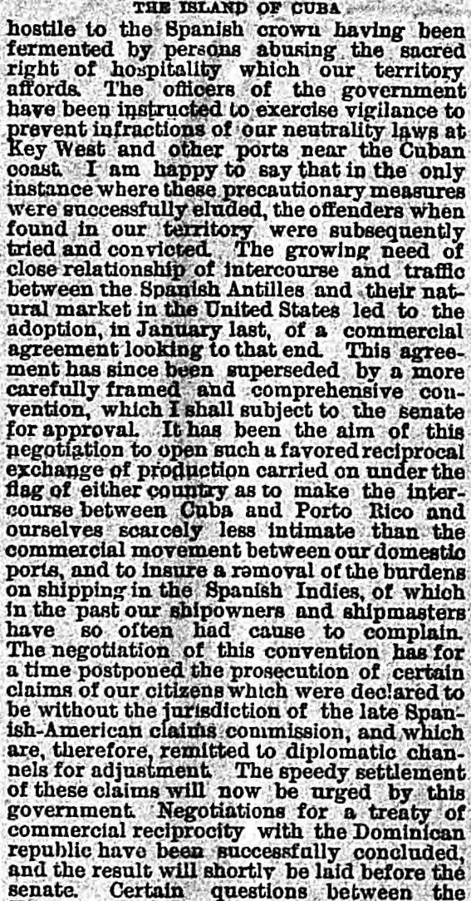
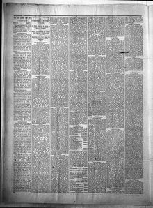

Claims of our citizens which were declared to be without the jurisdiction of the late Spanish-American claims commissionReclamaciones de nuestros ciudadanos que fueron declaradas estar fuera de la jurisdicción de la difunta comisión de reclamaciones hispanoamericana
The Bad Lands Cow Boy. Little Missouri, Dakota [i.e. N.D.], December 11, 1884. Page 2. Published by A.T. Packard. A weekly newspaper, 1884–1886.The Bad Lands Cow Boy. Little Missouri, Dakota [i.e. N.D.], 11 de diciembre de 1884. Página 2. Publicado por A.T. Packard. Periódico semanal, 1884–1886. View the originalVer el original


See the full pageVer la página completaThe United States government announced that claims by U.S. citizens outside the jurisdiction of the Spanish-American claims commission will be remitted to diplomatic channels for a speedy settlement. Additionally, negotiations for a commercial reciprocity treaty with the Dominican Republic were successfully concluded and will soon be submitted to the Senate.El gobierno de los Estados Unidos participó que las reclamaciones de ciudadanos estadounidenses excluidas de la competencia de la comisión mixta hispano-estadounidense se sustanciarán por la vía diplomática para su pronta composición. Además, culminaron con éxito las negociaciones para un tratado de reciprocidad comercial con la República Dominicana, el cual pasará a deliberación del Senado.
FULL TEXT:TEXTO COMPLETO:
THE ISLAND OF CUBALA ISLA DE CUBA
hostile to the Spanish crown having been fermented by persons abusing the sacred right of hospitality which our territory affords. The officers of the government have been instructed to exercise vigilance to prevent infractions of our neutrality laws at Key West and other ports near the Cuban coast. I am happy to say that in the only instance where these precautionary measures were successfully eluded, the offenders when found in our territory were subsequently tried and convicted. The growing need of close relationship of intercourse and traffic between the Spanish Antilles and their natural market in the United States led to the adoption, in January last, of a commercial agreement looking to that end. This agreement has since been superseded by a more carefully framed and comprehensive convention, which I shall subject to the senate for approval. It has been the aim of this negotiation to open such a favored reciprocal exchange of production carried on under the flag of either country as to make the intercourse between Cuba and Porto Rico and ourselves scarcely less intimate than the commercial movement between our domestic ports, and to insure a removal of the burdens on shipping in the Spanish Indies, of which in the past our shipowners and shipmasters have so often had cause to complain. The negotiation of this convention has for a time postponed the prosecution of certain claims of our citizens which were declared to be without the jurisdiction of the late Spanish-American claims commission, and which are, therefore, remitted to diplomatic channels for adjustment. The speedy settlement of these claims will now be urged by this government. Negotiations for a treaty of commercial reciprocity with the Dominican republic have been successfully concluded, and the result will shortly be laid before the senate.hostil a la corona española habiendo sido fermentada por personas que abusan del sagrado derecho de hospitalidad que nuestro territorio ofrece. Los oficiales del gobierno han sido instruidos a ejercer vigilancia para prevenir infracciones de nuestras leyes de neutralidad en Cayo Hueso y otros puertos cerca de la costa cubana. Me complace decir que en el único caso en que estas medidas precautorias fueron eludidas con éxito, los ofensores cuando fueron encontrados en nuestro territorio fueron posteriormente juzgados y condenados. La creciente necesidad de una estrecha relación de comercio y tráfico entre las Antillas españolas y su mercado natural en los Estados Unidos condujo a la adopción, en enero pasado, de un acuerdo comercial dirigido a ese fin. Este acuerdo ha sido desde entonces sustituido por una convención más cuidadosamente elaborada y comprensiva, que someteré al senado para su aprobación. Ha sido el objetivo de esta negociación abrir un intercambio recíproco favorecido de producción transportada bajo la bandera de cualquiera de los dos países tal que haga el comercio entre Cuba y Puerto Rico y nosotros apenas menos íntimo que el movimiento comercial entre nuestros puertos domésticos, y asegurar una remoción de las cargas sobre el transporte marítimo en las Indias españolas, de las cuales en el pasado nuestros armadores y capitanes de buques tan a menudo han tenido causa para quejarse. La negociación de esta convención ha por un tiempo pospuesto la prosecución de ciertas reclamaciones de nuestros ciudadanos que fueron declaradas estar fuera de la jurisdicción de la difunta comisión de reclamaciones hispanoamericana, y que son, por tanto, remitidas a los canales diplomáticos para su ajuste. El pronto arreglo de estas reclamaciones será ahora instado por este gobierno. Las negociaciones para un tratado de reciprocidad comercial con la república dominicana han sido concluidas con éxito, y el resultado será presentado en breve ante el senado.
This collection gathers the coverage of the Dominican Republic in the American press, in the order it was published.Esta colección reúne la cobertura de la República Dominicana en la prensa estadounidense, en el orden en que se publicaron.